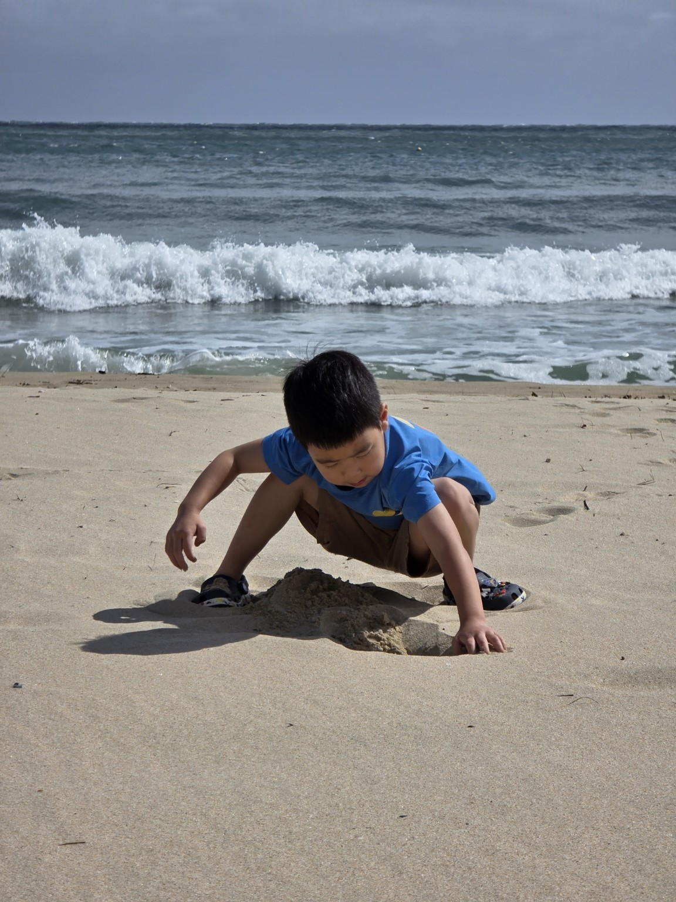

Busan, Korea
해운대 바다와 모래놀이, 우리 가족의 부산 여행.
2박 3일 일정과 여행 노트를 만나보세요.
도하와 이나, 그리고 우리 가족이 함께한
반짝이는 순간들을 이곳에 남깁니다.
언젠가 다시 펼쳐 보았을 때
그날의 바람과 웃음이 떠오르기를.

해운대 바다와 모래놀이, 우리 가족의 부산 여행.
2박 3일 일정과 여행 노트를 만나보세요.

푸른 바다와 따뜻한 햇살, 우리 가족의 오키나와 여행.
여행 일정과 추억을 만나보세요.

앞으로 함께 만들어갈 또 다른 이야기.
새로운 여행의 추억이 이곳에 차곡차곡 쌓일 거예요.
시간이 흘러도 오래도록 남을
우리 가족만의 작은 여행 앨범.